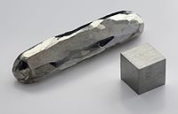

Numero atomico: 48
Massa atomica: 112,4
Temperatura di fusione (°C): 321
Temperatura di ebollizione (°C): 765
Energia di prima ionizzazione (kj/mol): 868
Elettronegatività (secondo Pauling): 1,69
Densità: 8,65
Numeri di ossidazione: +2
Configurazione elettronica: 1s2, 2s2, 2p6, 3s2, 3p6, 3d10, 4s2, 4p6, 4d10, 5s2
Maggiori Informazioni